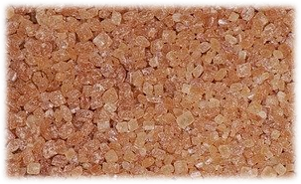
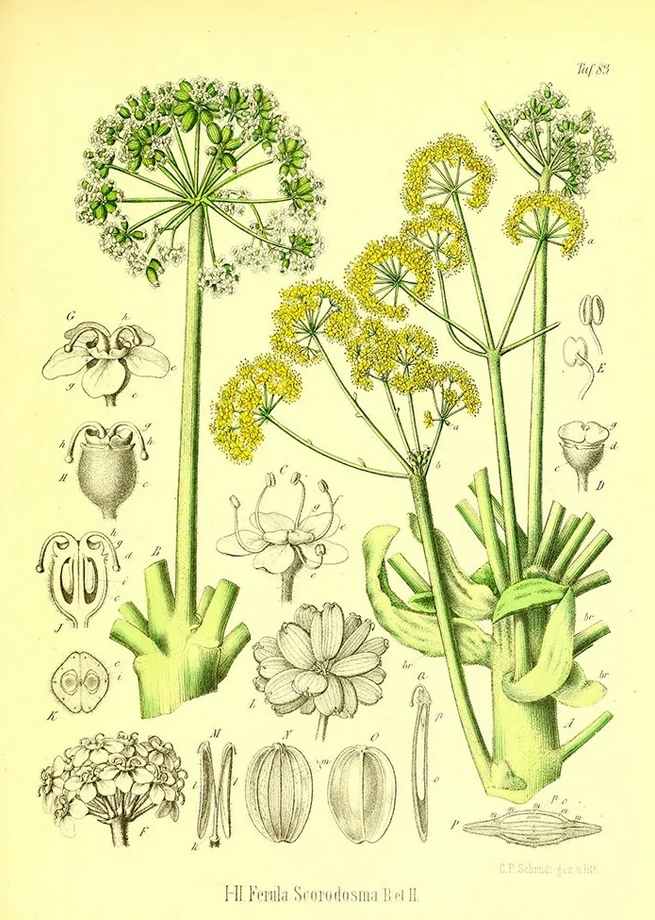

Native Indian Spices
Asafoetida (Ferula assa-foetifda)
Asafoetida is a very unique spice as it is the gummy resin exuded from a rhizome. It has a very unique sulfurous smell that disappears on cooking. It is often used to aid in digestion and relieve flatulence.
Asafoetida is available in chunks, granules, and powder form for use in cooking. The powder form is a very mild version as a very high amount of all-purpose flour is used to maintain its stability and prolong shelf life.
This spice is often added to curries, sauces, and pickles. It is also churned with watered down yogurt or curd and salt to prepare a cooling drink for the summer months. When added to dishes this spice imparts unique flavor similar to garlic and onion and so is used by communities who follow a Satvik/Brahmin diet which avoids garlic and onion.
